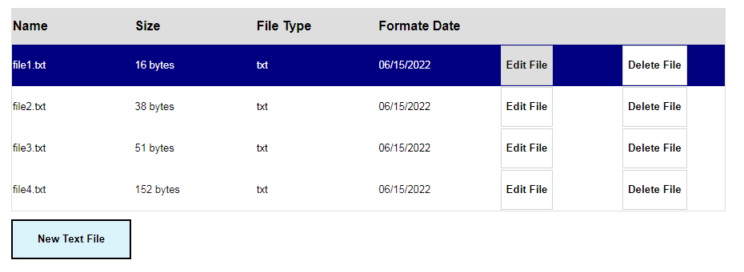
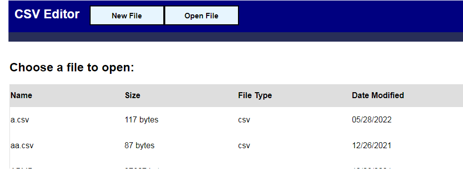
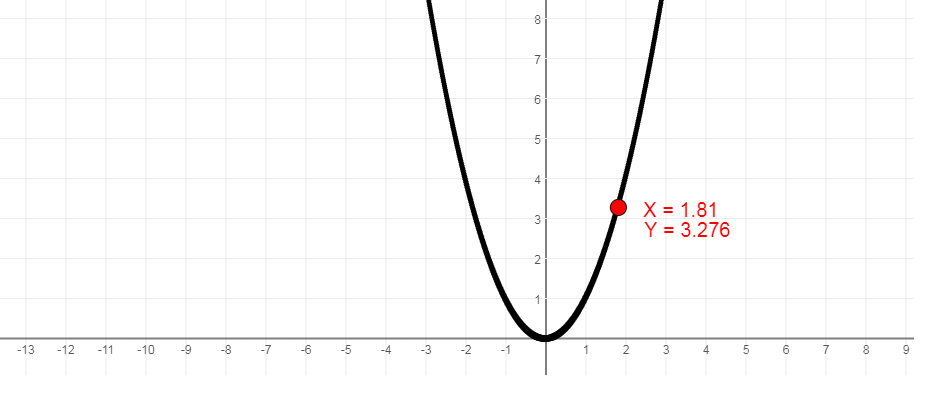
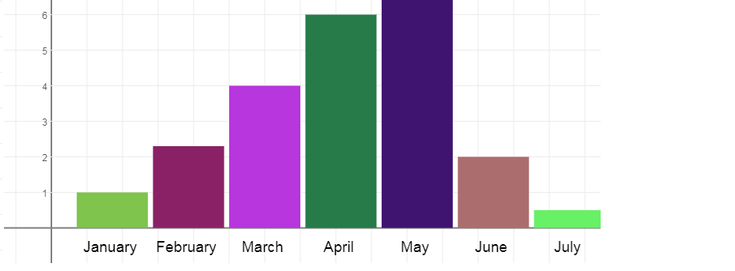
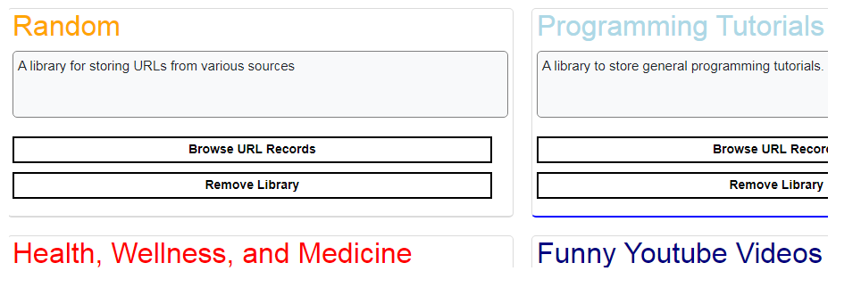

Text Reader and Editor

An app that allows you to create, modify, and delete text files (Capable of rendering HTML tags, so it's possible to add images, colored text, etc. to files.) Provides a read-only screen if you want to just quickly refer to the text file, and offers you the option to make any changes as well. This is an app demonstrating basic CRUD functionality. Developed with Javascript and Node JS.
CSV Editor

This is an app that allows you to read, modify, and delete CSV files as well as create them from scratch. This can be a useful tool when working with large datasets, and provides the ability to make quick and easy modifications. Developed with JS and Node JS.
2D Graph Scroller

2D Graph Scroller is a graphing tool that lets you draw functions on a 2D coordinate plan. It contains mouse tracking, dragging, and scrolling capabilities, which allows you to navigate anywhere on the plane with your mouse.
Chart Builder

Built upon the 2D Graph Scroller library, this is an app that currently lets you design bar charts, line charts, and candlestick charts by creating or importing datasets. While still in its early stages, Chart Builder has the potential to become a very powerful data visualization tool.
URL Library

A 'clone' of Mozilla's Pocket service. Ever run across an interesting website or video, but don't have time to read or watch all the content at the moment? Ever view some interesting content, and know that you want to view it again sometime in the future? URL library lets you quickly bookmark these pages by
allowing you to store copied URLs into a backend JSON file, and then importing these URLs and placing them onto nice and clean table menu when needed. Allows you to create libraries, which allows you to classify stored URLs based on category (funny videos, programming tutorials, interesting news articles, etc.). Also includes a built in image scraper, which attempts to scrape images from specified URLs.